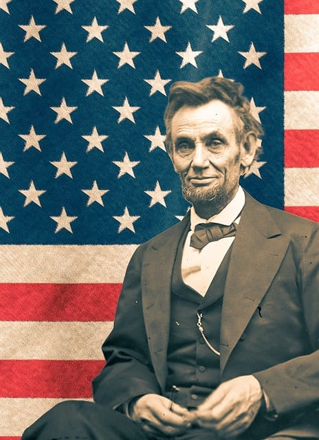

Abraham Lincoln was the 16th President of the United States,
serving from 1861 until his assassination in 1865. Born on
February 12, 1809, in a log cabin in Kentucky, he grew up in
poverty and received little formal education. Despite these
challenges, Lincoln went on to become one of the most
influential figures in American history. He led the country
through its Civil War, preserved the Union, and ended slavery.